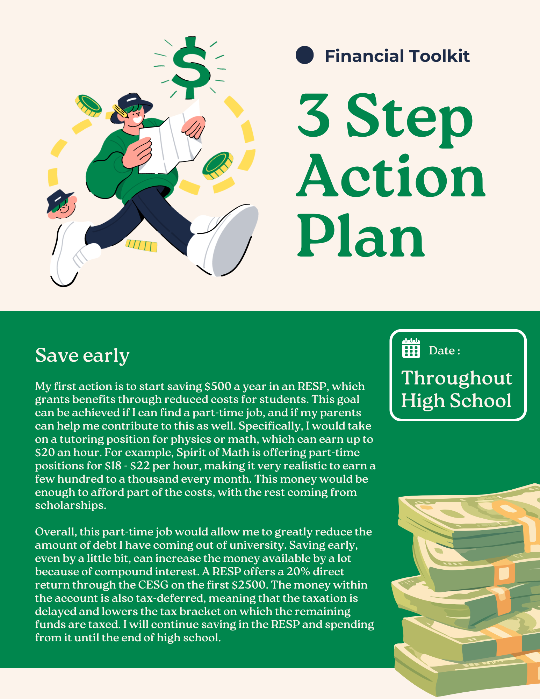
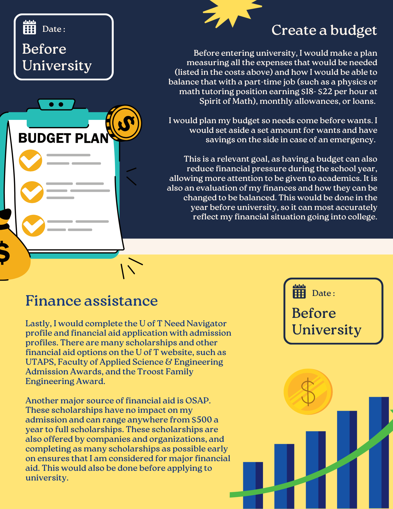

Program Cost & Location
Location: U of T St. George, in downtown Toronto.
Total Estimated Cost of Program: Around $28,580 on the lower end, and up to $34,980.
Potential List of Expenses
Tuition
The cost for all undergrad programs, according to the U of T website, is $14,180 / year
Transportation
U of T offers their own shuttle bus service that is free for U of T students. To commute around the city, a TTC transit is the most convenient and affordable option. An estimation of the cost will be from the TTC U-pass, which is $70/month. Because the campus is in downtown Toronto, most services can likely be accessible within walking distance.
Food / Housing
In the Chestnut residence, the total cost of housing and an unlimited meal plan is $27,120. Dining out would cost ~$80 more. Students online report spending from $200 - $900 for groceries each month. Outside of the campus dorm, rent costs around $1000 / month for rent, along with $100/month for utilities.
Clothing
Although clothing might not be a monthly expense, occasionally shopping for clothes and shoes are important, as the climate can vary greatly from the seasons of the year. This accounts for ~$50/month.
Phone plans
Phone plans are $50-100, and can depend on the data usage. Sometimes, there would also be promotional events for students.
Academic supplies
The total cost of textbooks and software is around ~$1100, but that is a fixed cost . Although only students are allowed to access U of T course supplies, information can be found online about what textbooks are used in engineering for first year, which is ~$800.
Entertainment & subscriptions
These include supplies for hobbies, social activities, and subscriptions for streaming services or educational apps. It is estimated to be around ~$200 / month.
Emergency
This would act as a buffer if there are urgent needs, such as unpaid bills or medical emergencies. People recommend ~$500.
Expense Breakdown Chart
Annual Expenses Distribution
Quotations
“Beware of little expenses; a small leak will sink a great ship.”
This quote is helpful to help me realize that people often pay attention to massive, one time purchases rather than the smaller but regular purchases. In some cases, a habit that consistently requires spending can end up causing a lot more. Expenses such as frequent food deliveries and unused subscription services can drain a student’s budget without them realizing, especially during a time of financial constraints. These small leaks are places where spendings could be reduced, making this quote helpful to realizing that. In university or beyond, I would spend according to my budget, and not spend money impulsively. Spending impulsively often leads to buying things that I do not even want, and would end up unused in a closet. If I have a surplus, I would save it in the bank for future use.
“A budget is telling your money where to go, instead of wondering where it went.”
A budget is the way for students to gauge how much money they have and how much they can spend. Students often receive large amounts of money at once, such as OSAP or other scholarships. Without a budget to organize this money, many students overspend at first and have to compensate down the line by borrowing. This is why I would use a budget to control my savings in university, as well as tracking my spendings, so I have an accurate perception of how my money is being used.
“Money is a terrible master but an excellent servant.”
The lesson from this quote is knowing how to control money and use it responsibly. When someone has no savings, every financial decision is stressful. During university, I would open a savings account separate from my daily checking, and this would be used for future uses. By planning ahead, it ensures that I have the time and energy to pursue my goals with a safety net. For example, the money can be used for post grad, emergency, or buying a car or house.
Action Plan


References
- 10 Best Quotes About Saving Money | Lightheart, Sanders and Associates. (2022). https://lsa.cpa/2022/07/26/10-best-quotes-about-saving-money/
- Compare U of T residence fees - UofT student life. (2020a, January 27). UofT Student Life. https://www.studentlife.utoronto.ca/task/compare-u-of-t-residence-fees/
- Getting around - University of Toronto Transportation Services. (2021, June 15). University of Toronto Transportation Services. http://transportation.utoronto.ca/getting-around/
- Living costs in Toronto - UofT student life. (2020b, January 27). UofT Student Life. https://www.studentlife.utoronto.ca/task/living-costs-in-toronto/
- Macleans.ca. (2023). What I spent last month as a Canadian university student - macleans.Ca. In Macleans.ca. https://macleans.ca/education/spending-budget-university-students/
- No free rides: Winners and losers of the TTC u-pass – TransForm. (2018). Torontomu.Ca. https://transformlab.torontomu.ca/portfolio-item/winners-losers-ttc-u-pass/
- University of Toronto. (2024). Finances. In Discover Engineering. https://discover.engineering.utoronto.ca/finances/
- Spirit of Math. (2024). Careers & Part-Time Assistant Teacher / Tutor Positions ($18 - $22/hr). Spirit of Math Schools Inc. https://spiritofmath.com/careers/
- Workopolis. (2024). Spirit of Math Part-Time Tutor & Assistant Positions in Oakville, Ontario. Workopolis. https://www.workopolis.com/search?q=spirit+of+math&l=oakville%2C+ontario
- Reddit r/UofT. (2024). What first year engineering books are being used? Reddit UofT Community. https://www.reddit.com/r/UofT/comments/1cmy2kd/what_first_year_engineering_books_are_being_used/